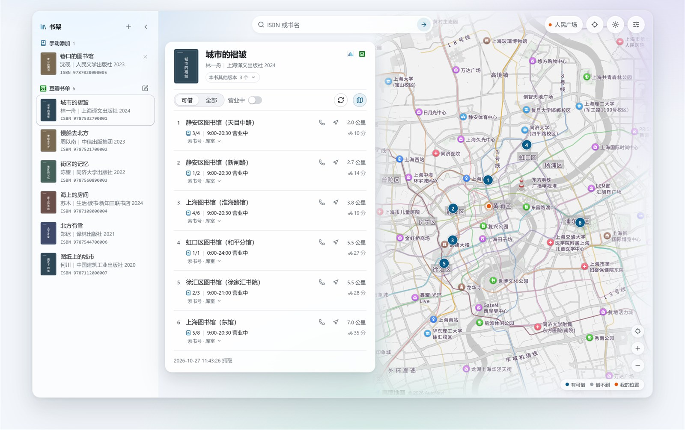

快速开始
三分钟，从下载到第一本书
Windows 用免安装版；macOS / Linux 用源码，需要 Python 3.9 或更新。
macOS / Linux · 源码
一行命令跑起来
git clone https://github.com/Giant-Apple/shlib-finder.git
cd shlib-finder
./start-server.sh不想装程序？装 Edge 侧边栏插件，直接在豆瓣图书页看馆藏。
常见问题
你可能想先知道的几件事
这个程序和上图、豆瓣是什么关系？
没有关系，是个非官方项目，馆藏数据只来自公开页面。
要收费吗？需要注册或登录吗？
不收钱，也没有广告和内购，不需要注册。源码公开在 GitHub，任何人都能读、能改、自己打包。
查到的是最新的吗？
是当场从上图中查的，结果上会标出查的时间；想刷新点「重新查询」。
一定要申请高德 Key 吗？地址要在上海吗？
不填 Key 也能查馆藏，只是没有地图和远近。地址只认上海，别的城市会直接拒绝；少数馆算不出距离，会标成「距离未知」。
开馆时间以各馆公告为准，节假日去之前最好打个电话。
「想读」为什么读不到？
只用公开页面、不登你的豆瓣账号，私密列表读不到；在豆瓣把「想读」设为公开就行。
macOS / Linux 和手机能用吗？
免安装版只有 Windows，macOS / Linux 用源码运行；手机连同一个 Wi-Fi 打开网址就能查，不用装 App。
书单和地址会上传吗？
不会。程序跑在自己电脑上，不登录、不统计；查书时只连豆瓣、上图和高德，点「检查更新」才连 GitHub。
可以自己改、自己打包吗？
可以。源码公开，按 PolyForm Noncommercial 1.0.0 发布，个人和非商业用途免费。